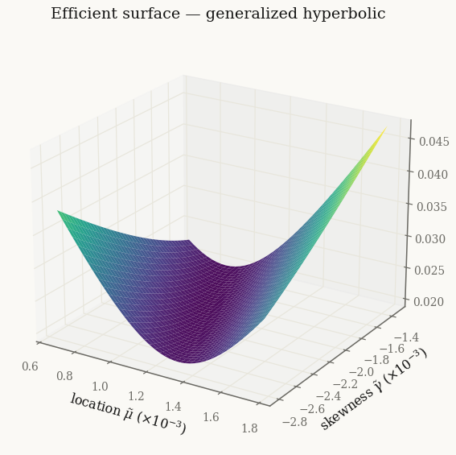
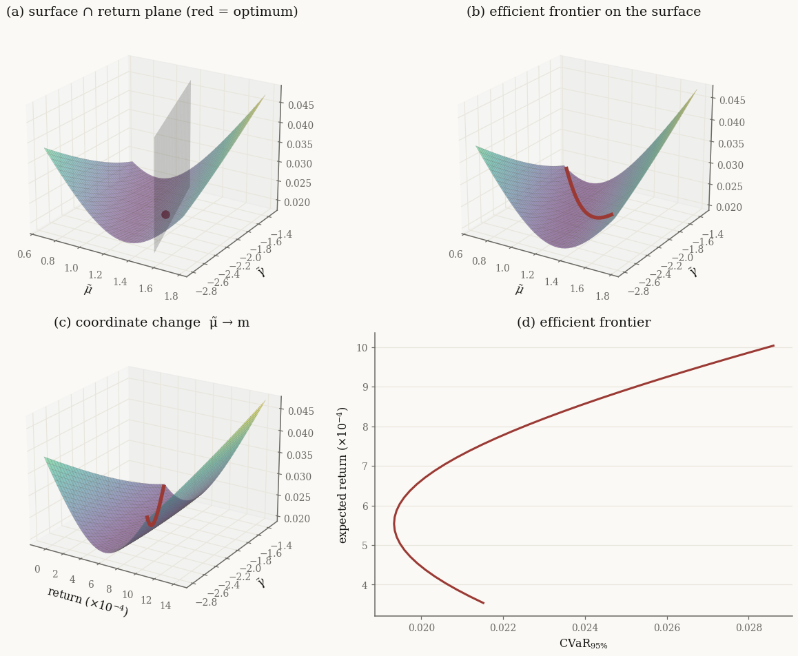
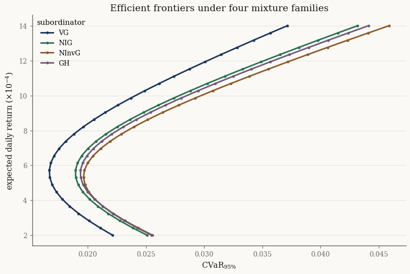

Mean-risk optimization and the efficient surface#
Markowitz traded expected return against variance. But variance is a poor proxy for what investors actually fear — large losses — and it is blind to skewness. Replacing variance with a coherent risk measure such as \(\operatorname{CVaR}_\alpha\) gives the mean-risk problem
For a general distribution this is a \(d\)-dimensional optimization that must be solved by Monte Carlo. The normal-mixture structure collapses it to two dimensions. Because \(w^\top X\) is again a univariate mixture with parameters \((\tilde\mu, \tilde\gamma, \tilde\sigma) = (w^\top\mu,\, w^\top\gamma,\, \sqrt{w^\top\Sigma w})\), and because any coherent \(\rho\) is decreasing in \(\tilde\mu\), non-increasing in \(\tilde\gamma\), and non-decreasing in \(\tilde\sigma\) (see Mean-Risk Optimization for Normal Mixture Distributions), the optimal portfolio for a target \((\tilde\mu, \tilde\gamma)\) is simply the one of minimum dispersion:
The map \((\tilde\mu, \tilde\gamma) \mapsto \rho\) is the efficient surface. This tutorial reproduces Figures 8–9 of [Shi2016], then asks a question the thesis did not: does the choice of mixture family change the answer? We run the same optimization through the variance gamma, NIG, normal-inverse-gamma, and generalized hyperbolic models.
import jax
jax.config.update("jax_enable_x64", True)
import jax.numpy as jnp
import numpy as np
import pandas as pd
from pathlib import Path
from normix import (GeneralizedHyperbolic, NormalInverseGaussian,
NormalInverseGamma, VarianceGamma)
from normix.finance import CVaR, MeanRiskProblem
from normix.utils.plotting import set_theme, COLORS
set_theme()
np.set_printoptions(precision=5, suppress=True)
Four fits of one basket#
We use eight Dow constituents spanning several sectors and fit all four
mixture families by EM. The generalized hyperbolic carries a scale
indeterminacy between its GIG subordinator and \((\gamma, \Sigma)\); we fix the
gauge with regularize_a_eq_b() (a marginal-preserving rescaling) so its
reduced coordinates are on the same footing as the others.
basket = ["AAPL", "MSFT", "JPM", "XOM", "JNJ", "PG", "WMT", "CAT"]
data_path = Path("../../../data/sp500_returns.csv").resolve()
R = pd.read_csv(data_path, index_col="Date", parse_dates=True)[basket].dropna()
X = jnp.asarray(R.values, dtype=jnp.float64)
def fit(cls, **kw):
return cls.default_init(X).fit(
X, max_iter=100, tol=1e-4, e_step_backend="cpu", **kw).model
models = {
"VG": fit(VarianceGamma, alpha_min="inverse_moment"),
"NIG": fit(NormalInverseGaussian),
"NInvG": fit(NormalInverseGamma),
"GH": fit(GeneralizedHyperbolic).regularize_a_eq_b(),
}
for name, m in models.items():
print(f"{name:6s} mean log-likelihood {float(m.marginal_log_likelihood(X)):.4f}")
VG mean log-likelihood 23.9812
NIG mean log-likelihood 24.1826
NInvG mean log-likelihood 24.1900
GH mean log-likelihood 24.1906
The dimension reduction, made concrete#
MeanRiskProblem bundles a fitted model with a risk measure and exposes the
reduced-coordinate algebra. The global minimum-variance portfolio is a useful
anchor — it sits at the bottom of the dispersion bowl and, because dispersion
dominates CVaR at daily-return scales, very near the apex of the efficient
surface.
gh = models["GH"]
cvar = CVaR(0.05)
prob = MeanRiskProblem(gh, cvar)
mv_mu, mv_gamma = prob.min_variance_point()
print(f"min-variance point μ̃ = {float(mv_mu):+.3e} γ̃ = {float(mv_gamma):+.3e}")
print(f"its expected return m = {float(prob.expected_return(mv_mu, mv_gamma)):+.3e}")
min-variance point μ̃ = +1.092e-03 γ̃ = -2.056e-03
its expected return m = +5.537e-04
The reduction is exact, not approximate: the minimum-dispersion weights at \((\tilde\mu, \tilde\gamma)\) project back to exactly those reduced coordinates, with realised dispersion \(g = w^\top\Sigma w\).
w = prob.weights(mv_mu, mv_gamma)
proj = prob.projection_at(mv_mu, mv_gamma)
print(f"Σ wᵢ = {float(w.sum()):.5f} (budget constraint wᵀe = 1)")
print(f"wᵀμ, wᵀγ = {float(proj._mu_scalar):+.3e}, {float(proj._gamma_scalar):+.3e}")
print(f"dispersion g = {float(prob.dispersion(mv_mu, mv_gamma)):.4e}"
f" vs wᵀΣw = {float(w @ gh.sigma() @ w):.4e}")
Σ wᵢ = 1.00000 (budget constraint wᵀe = 1)
wᵀμ, wᵀγ = +1.092e-03, -2.056e-03
dispersion g = 2.6617e-04 vs wᵀΣw = 2.6617e-04
Figure 8 — the efficient surface#
Each point of the surface is the \(\operatorname{CVaR}_{95\%}\) of the minimum-dispersion portfolio realising \((\tilde\mu, \tilde\gamma)\), evaluated over a single shared sample of \(Y\) (common random numbers). We frame the grid around the efficient frontier — the band of returns a manager actually operates in — by first solving for the frontier and bracketing the coordinates it visits.
Y = gh.joint.subordinator().rvs(20_000, seed=0)
E_Y = float(prob.E_Y())
mv_ret = float(prob.expected_return(mv_mu, mv_gamma))
# 1. efficient frontier over a band of target returns around the vertex
targets = jnp.linspace(mv_ret - 2.0e-4, mv_ret + 4.5e-4, 40)
ga_a = np.asarray(gh.gamma)
ga_search = 2.0 * max(ga_a.max() - ga_a.min(), 4e-4)
frontier = prob.efficient_frontier(
targets, Y, gamma_bounds=(float(mv_gamma) - ga_search, float(mv_gamma) + ga_search),
n_iter=48)
# 2. bracket the frontier's (μ̃, γ̃) to set a tight, relevant surface window
def _pad(lo, hi, f=0.12):
c, h = 0.5 * (lo + hi), 0.5 * (hi - lo) * (1.0 + f)
return c - h, c + h
mu_lo, mu_hi = _pad(float(frontier.mu_tilde.min()), float(frontier.mu_tilde.max()))
ga_lo, ga_hi = _pad(float(frontier.gamma_tilde.min()), float(frontier.gamma_tilde.max()))
mu_grid = jnp.linspace(mu_lo, mu_hi, 41)
ga_grid = jnp.linspace(ga_lo, ga_hi, 41)
surface = prob.efficient_surface(mu_grid, ga_grid, Y)
print(f"CVaR over the grid ∈ [{float(surface.risk.min()):.4f}, {float(surface.risk.max()):.4f}]")
CVaR over the grid ∈ [0.0193, 0.0472]
import matplotlib.pyplot as plt
MU, GA = np.meshgrid(np.asarray(mu_grid) * 1e3, np.asarray(ga_grid) * 1e3, indexing="ij")
Z = np.asarray(surface.risk)
fig = plt.figure(figsize=(8.5, 6.2))
ax = fig.add_subplot(111, projection="3d")
ax.plot_surface(MU, GA, Z, cmap="viridis", lw=0, antialiased=True, alpha=0.95)
ax.set_xlabel(r"location $\tilde\mu$ ($\times 10^{-3}$)")
ax.set_ylabel(r"skewness $\tilde\gamma$ ($\times 10^{-3}$)")
ax.zaxis.set_rotate_label(False)
ax.set_zlabel(r"$\mathrm{CVaR}_{95\%}$", rotation=90, labelpad=8)
ax.set_title("Efficient surface — generalized hyperbolic")
ax.view_init(elev=22, azim=-58)
plt.show()

The surface is a convex bowl that rises toward both extreme corners — including the corner of large \(\tilde\mu\) and \(\tilde\gamma\). That is not a violation of Theorem 1. The theorem holds \(\tilde\sigma\) fixed; here \(\tilde\sigma = \sqrt{g(\tilde\mu, \tilde\gamma)}\) is the minimum dispersion needed to realise \((\tilde\mu, \tilde\gamma)\), and it grows quadratically away from the minimum-variance vertex. Reaching simultaneously high location and skewness requires an aggressive, leveraged portfolio whose dispersion — and hence CVaR, which is increasing in \(\tilde\sigma\) — overwhelms the linear gain from \(\tilde\mu, \tilde\gamma\). The valley floor is the efficient region; that is exactly what the frontier traces next.
Figure 9 — geometry of the proposition#
Fix a target return \(m\): the constraint \(\tilde\mu + \tilde\gamma\,E[Y] = m\) is a vertical plane (panel a), and its intersection with the surface is a convex curve. The red dot marks that curve’s minimum — the optimal portfolio for \(m\). Sweeping \(m\) traces the efficient frontier as a curve that lies on the surface (panel b). Re-coordinatizing \(\tilde\mu \to m\) (panel c) and projecting onto the risk–return plane (panel d) recovers the classical sideways-parabola frontier.
fmu = np.asarray(frontier.mu_tilde) * 1e3
fga = np.asarray(frontier.gamma_tilde) * 1e3
frisk = np.asarray(frontier.risk)
fm = np.asarray(frontier.expected_return) * 1e4
Mret = np.asarray(surface.expected_return) * 1e4
zmin, zmax = float(Z.min()), float(Z.max())
lift = 0.04 * (zmax - zmin) # raise curves slightly so they read on the surface
# panel (a): the return plane for one target and the optimum on it
k0 = int(0.72 * len(targets))
m0 = float(targets[k0])
ga_ln = np.asarray(ga_grid)
in_win = (m0 - ga_ln * E_Y >= mu_lo) & (m0 - ga_ln * E_Y <= mu_hi)
red = COLORS["brick"]
def _mesh(ax, Xg, Yg, Zg, alpha=0.5):
ax.plot_surface(Xg, Yg, Zg, cmap="viridis", alpha=alpha, rcount=41, ccount=41,
lw=0.2, edgecolor=COLORS["muted"], antialiased=True)
fig = plt.figure(figsize=(11.5, 8.8))
# (a) surface, the return-constraint plane, and the optimum (red dot)
axa = fig.add_subplot(221, projection="3d")
_mesh(axa, MU, GA, Z, alpha=0.45)
GG, ZZ = np.meshgrid(ga_ln[in_win], np.linspace(zmin, zmax, 2))
axa.plot_surface((m0 - GG * E_Y) * 1e3, GG * 1e3, ZZ, color=COLORS["muted"], alpha=0.22, lw=0)
axa.scatter([float(frontier.mu_tilde[k0]) * 1e3], [float(frontier.gamma_tilde[k0]) * 1e3],
[float(frontier.risk[k0]) + lift], color=red, s=55, depthshade=False)
axa.set_title("(a) surface ∩ return plane (red = optimum)")
axa.set_xlabel(r"$\tilde\mu$"); axa.set_ylabel(r"$\tilde\gamma$")
axa.view_init(elev=22, azim=-58)
# (b) efficient frontier lying on the surface
axb = fig.add_subplot(222, projection="3d")
_mesh(axb, MU, GA, Z)
axb.plot(fmu, fga, frisk + lift, color=red, lw=3.5)
axb.set_title("(b) efficient frontier on the surface")
axb.set_xlabel(r"$\tilde\mu$"); axb.set_ylabel(r"$\tilde\gamma$")
axb.view_init(elev=22, azim=-58)
# (c) coordinate change μ̃ → expected return
axc = fig.add_subplot(223, projection="3d")
_mesh(axc, Mret, GA, Z)
axc.plot(fm, fga, frisk + lift, color=red, lw=3.5)
axc.set_title("(c) coordinate change μ̃ → m")
axc.set_xlabel(r"return ($\times 10^{-4}$)"); axc.set_ylabel(r"$\tilde\gamma$")
axc.view_init(elev=22, azim=-58)
# (d) the efficient frontier
axd = fig.add_subplot(224)
axd.plot(frisk, fm, "-", color=red, lw=2)
axd.set_xlabel(r"$\mathrm{CVaR}_{95\%}$")
axd.set_ylabel(r"expected return ($\times 10^{-4}$)")
axd.set_title("(d) efficient frontier")
fig.tight_layout()
plt.show()

Does the family matter?#
The frontier in panel (d) is gauge-invariant — it lives in observable risk–return space — so we can lay the four families on one axis. The thesis used only the generalized hyperbolic; here we see how the tail and skewness assumptions of each subordinator reshape the tail-risk-optimal frontier.
targets_cmp = jnp.linspace(2e-4, 1.4e-3, 30)
frontiers = {}
fig, ax = plt.subplots(figsize=(9, 5.6))
for name, m in models.items():
p = MeanRiskProblem(m, cvar)
Ym = m.joint.subordinator().rvs(15_000, seed=0)
g_mv = float(p.min_variance_point()[1])
span = 1.5 * max(np.asarray(m.gamma).max() - np.asarray(m.gamma).min(), 4e-4)
fr = p.efficient_frontier(targets_cmp, Ym, gamma_bounds=(g_mv - span, g_mv + span), n_iter=46)
frontiers[name] = fr
ax.plot(np.asarray(fr.risk), np.asarray(fr.expected_return) * 1e4, "o-", ms=3, label=name)
ax.set_xlabel(r"$\mathrm{CVaR}_{95\%}$")
ax.set_ylabel(r"expected daily return ($\times 10^{-4}$)")
ax.set_title("Efficient frontiers under four mixture families")
ax.legend(title="subordinator")
plt.show()

The families agree on the shape but disagree on the level of tail risk. The variance gamma — whose Gamma subordinator has the lightest tail of the four — reports the most optimistic frontier, while the heavier-tailed NIG, NInvG, and GH price the same returns at higher CVaR. The gap is the cost of mis-specifying the tail.
summary = {}
weights = {}
for name, fr in frontiers.items():
k = int(np.argmin(np.asarray(fr.risk))) # the minimum-CVaR portfolio
summary[name] = {
"min CVaR": float(fr.risk[k]),
"return (×1e4)": float(fr.expected_return[k]) * 1e4,
}
weights[name] = np.asarray(fr.weights[k])
pd.DataFrame(summary).T.round(4)
| min CVaR | return (×1e4) | |
|---|---|---|
| VG | 0.0167 | 5.7241 |
| NIG | 0.0189 | 5.7241 |
| NInvG | 0.0196 | 5.3103 |
| GH | 0.0194 | 5.7241 |
The minimum-CVaR portfolio itself shifts with the family — heavier-tailed models tilt the allocation differently to control the same tail:
pd.DataFrame(weights, index=basket).round(3)
| VG | NIG | NInvG | GH | |
|---|---|---|---|---|
| AAPL | 0.014 | 0.019 | 0.009 | 0.018 |
| MSFT | 0.062 | 0.050 | 0.033 | 0.042 |
| JPM | 0.048 | 0.060 | 0.056 | 0.058 |
| XOM | 0.090 | 0.095 | 0.111 | 0.096 |
| JNJ | 0.297 | 0.297 | 0.314 | 0.299 |
| PG | 0.230 | 0.221 | 0.240 | 0.219 |
| WMT | 0.236 | 0.241 | 0.231 | 0.247 |
| CAT | 0.023 | 0.018 | 0.006 | 0.020 |
Takeaways#
The mean-risk problem for a normal mixture reduces to a 2-D problem in \((\tilde\mu, \tilde\gamma)\);
MeanRiskProblemexposes the reduction exactly, with optimal weights, dispersion, and projected return in closed form.efficient_surfacereproduces the convex efficient surface (Fig. 8) andefficient_frontierthe geometry and the classical frontier (Fig. 9), all from one fitted mixture and one shared subordinator sample.Swapping the subordinator family leaves the frontier’s shape intact but moves its level: tail assumptions translate directly into tail-risk-optimal allocations.
For the mathematics — the monotonicity theorem and the reduction proof — see Mean-Risk Optimization for Normal Mixture Distributions. Transaction-cost extensions and generalized diversification (effective number of bets) build on this same reduced surface.